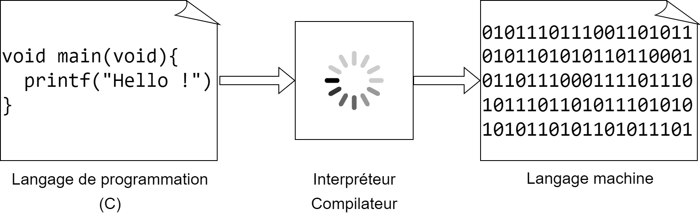
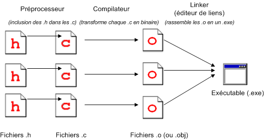

class: center, middle # Programmation procédurale : # introduction <img height="200px" src="img/logo.png"> --- ## On parle de quoi ? 1. <a href="UAA11-intro.html#3">Qu'est-ce qu'un langage de programmation ?</a> 2. <a href="UAA11-intro.html#4">Création d'un programme C</a> --- ## Qu'est-ce qu'un langage de programmation ? Un ordinateur est utilisé pour exécuter une série d'instructions. Problème : les ordinateurs ne "parlent" qu'en binaire (0 ou 1) : c'est le **langage machine**. Les instructions doivent donc être écrites dans ce langage pour qu'elles soient comprises par l'ordinateur. Solution : utiliser un langage de programmation (facilement manipulable par les humains) pour écrire ces instructions. Elles seront ensuite traduite en langage machine par un **interpréteur** ou un **compilateur** (en fonction du langage).  --- ## Création d'un programme C ### Étape 1 : l'édition → Création d'un fichier portant l'extension `.c` → C'est ce qu'on appelle un **programme source** ### Étape 2 : la compilation → Traduire le programme source en langage machine et vérifier les erreurs de syntaxe → Le résultat de la compilation porte le nom de **module objet** ### Étape 3 : l'édition de liens → L'éditeur de liens lie le programme objet avec les programmes de l'OS --- ### En résumé... 